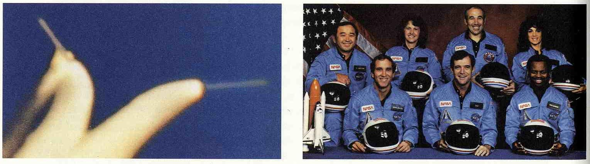
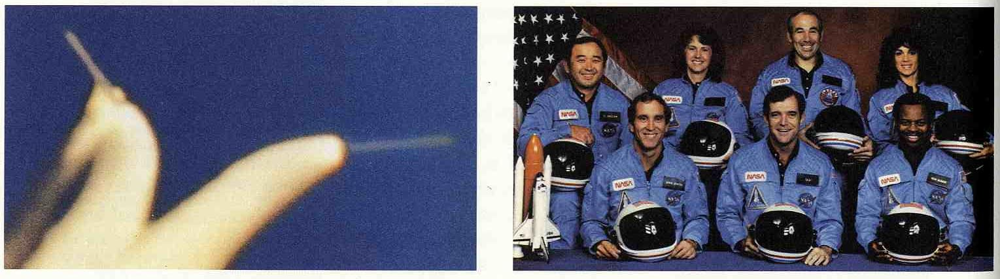

Представление информации
Наглядное отображение количественной информации
Эдвард Тафти
Содержание

John Snow (1813 — 1858)
 

Покидая плоскость
Когда жаба сбрасывает свою кожу во время линьки — ее шкурка покидает наш трехмирный мир и попадает в мир плоскости, как это и происходит с изображаемой информацией.
Трехмерная диаграмма рассеивания
Не так это просто — прийти к пониманию чего-либо, охватывающего совокупность самых разных процессов и явлений; понять, скажем, природу или — ее искаженное отражение — искусство.
И пусть это достаточно сложно — самостоятельно постичь всю суть природы или искусства, но ведь еще сложнее — помочь другому получить такой же всесторонний взгляд.
Это связано с тем, что создать в голове ясный и многомерный образ сложного явления мы в состоянии лишь шаг за шагом, постепенно; порой его невозможно описать только лишь словами.
В итоге — получается, что мы стеснены в средствах выражения для полноценного описания многосложного объекта и его частей.
Пауль Клее, “О современном искусстве”, Лондон, 1948
Уильям Пирсон “Планетарные машины”, Лондон, 1820
Цветное парное стереоизображение Бонадуз, Швейцария, октябрь 1975. Фотографии сделаны камерой Wild Leitz. Масштаб 1:11 000.
Галилео Галилей “Письма о солнечных пятнах”, Рим, 1613
«Бабочка Маундера»
Популяции, которые являются объектом статистического исследования, всегда отражают отклонения в одном или нескольких аспектах. Говоря о статистической науке, как об изучении отклонений, мы подчеркиваем контраст между задачами современных статистиков и их предшественников. До сравнительно недавнего времени, подавляющее большинство статистиков, как мне представляется, не имели иной цели, нежели чем определять совокупности или средние значения. Отклонение само по себе — не было предметом изучения, и обычно расценивалось как помеха, отвлекающая от величины среднего. Кривая нормального распределения была известна уже целое столетие, тогда как стандартное отклонение было объектом исследований вплоть до 1915 года. Тем не менее, с современной точки зрения, изучение причин отклонения любых непостоянных явлений, от урожая пшеницы до интеллекта людей, должно начинаться с исследования и измерения самих отклонений.
Рональд А. Фишер “Статистические методы для исследователей”, 1925
Диаграмма Маундера с 1880 по 1980 годы, NASA
Расписание движения поездов Сурабая—Джокякарта (ноябрь 1937 года)
Келлом Томлинсон “Искусство танца в текстах и картинках”, Лондон, 1735
Рисунки из газеты “Красный флаг”, Токио, 7 марта 1985
Small multiples / Параллельное изложение / Малые множества
Рисунок из справочника “Метеорологичская карта, 1984″, Токио, 1985
Рисунок из метеорологического альманаха за 1984 год, Метеорологическое агентство и Метеороголическая ассоциация Японии, Токио, 1984
Рисунок из книги Юми Такахаши и Икуо Шибукава “Цветовая координация”, Токио, 1985
Когда современные архитекторы небезосновательно отказались от использования орнамента на зданиях, они бессознательно стали создавать здания, которые стали орнаментом сами по себе. Яростные сторонники работы с Пространством и противники символизма и орнамента, они драматически исказили все здание, превратив его в “уточку”. Невинная и недорогая практика декорирования была заменена на бесстыдное и дорогостоящее искажение структуры, и в результате на свет появилась “утка”… Самое время переоценить некогда пугающее заявление Джона Раскина о том, что архитектура — это украшение конструкции, но мы также должны помнить о предостережении архитектора Огастеса Пьюджина: можно декорировать конструкцию, но не надо конструировать декорацию.
Роберт Вентури, Денис Скотт Браун и Стивен Изенур “Уроки Лас-Вегаса”, Кембридж, 1977
Большая Утка, Нью-Йорк, фотография Эдварда Тафти, июль 2000
Микро/Макро уровни

Схема работы линий Токайдо-синкансэн и Саньё-синкансэн на 12:00 25 июня 1985, пункт управления железными дорогами Японии, Токио
"Любая отметка сама по себе может нести информацию.
Самая простая осмысленная отметка это цифра."
Джон Тукей
Кейтин-экспресс на станции Йокогама, 1985
“Чем проще форма букв, тем легче читать текст” — эта идея владела умами конструктивистов. Она стала чем-то, вроде догмы, и “модернистские” типографы до сих пор следуют этому.
Однако, это утверждение неверно, потому что мы не читаем букв, мы читаем слова, слово целиком, “слово как картинку”. Исследования в области офтальмологии показали, что чем больше буквы отличаются между собой, тем легче читать.
Не вдаваясь в сравнительные детали, должно быть понятно, что труднее всего читать текст, набранный заглавными буквами из-за одинаковой высоты, объема, а нередко и ширины букв. Если говорить об антиквах и гротесках, то последние читать сложнее. И модное нынче предпочтение шрифтов без засечек обнаруживает некомпетентность дизайнеров как с точки зрения истории, так и с точки зрения практичности.
Йозеф Альберс "Взаимодействие цветов", Нью Хэвен, 1975
Меня привлекают сложность и противоречия в архитектуре… Я говорю о сложной и противоречивой архитектуре, основанной на богатстве и неопределенности современной жизни, в том числе присущей искусству. Везде, кроме архитектуры, сложность и противоречия признаны, начиная с изысканий Гёделя в области непротиворечивости в математике и заканчивая анализом Т.С. Элиотом “сложной” поэзии и определения Йозефом Альберсом парадоксальных качеств живописи… Архитекторы не могут больше позволять шантажировать себя пуританской чистотой ортодоксальной модернистской архитектуры… Архитектура сложности и противоречий имеет особый долг по отношению к целому: её правда должна быть в её полноте или в её стремлении к полноте. Она должна воплощать скорее сложное единство составляющих элементов, нежели простое единство исключений… Там, где простота не уместна, результат оказывается простым. Крикливое упрощение опресняет архитектуру. Меньше — значит скучно.
Роберт Вентури, "Сложности и противоречия в архитектуре"
Работа со слоями
Убоку Нишитани «Koyagire Daiishu», «Техники каллиграфии», 17 том, Токио, 1972
IBM Series III Copier/Duplicator, Руководство по сборке, Колорадо, 1976
Обычно дизайнеры не любят работать с таблицами, но на самом деле, если подходить к делу вдумчиво, этот процесс может быть очень и очень приятным. Для начала стоит попробовать отказаться от явной сетки вообще. Она допустима только в том случае, если другого выхода нет. Вертикальные отбивки нужны только в таблицах с очень узкими ячейками, где без них цифры легко будет перепутать. Таблицы без вертикальных отбивок выглядят гораздо лучше, чем с ними.
Ян Чихольд, «Асимметричная типографика», Базель, 1935
Симла, Индия, карта армии Соединенных Штатов, 1954
Префектура Токио. Мусашино, парк Уэно, район Курумазака, Токио, 1884
Чистые, яркие цвета невыносимы в большом количестве, на больших площадях рядом друг с другом, но в то же время их фрагментарное использование или же комбинация ярких и бледных тонов может давать удивительные эффекты. «Шум это не музыка… красочная тема может родиться только в тишине», говорил Виндиш.
Эдуард Имхоф «Представление картографического рельефа», Берлин, 1982
Гаетано Канизца «Контуры без градиентов или когнитивные контуры?», «Итальянский журнал по психологии», №1, апрель 1974
Иллюстрация из студенческого проекта Джона Вертаймера, Графический дизайн, Йельский университет, 1985 – 1986
«Басни Эзопа», рисунок Александра Кальдера, Париж, 1931
Динамичное взаимодействие объекта и фона было осмыслено четко сформулировано в каждой стройной концепции природы зрительного воспрития, в каждом здоровом понимании трехмерной реальности. Лао-цзы продемонстрировал это, сказав: «Сосуд полезен только до тех пор, пока он пуст. Как и проём в стене, который служит окном. Таким образом, именно отсутствие чего-то в предметах делает их функциональными». В восточной визуальной культуре пустому пространству отводится существенная роль. Китайские и японские живописцы не боятся разделять плоскость изображения на неравные части большими пустотами так, что именно взаимное расположение графики и «воздуха» заставляет взгляд зрителя скользить по поверхности изображения с разной скоростью — таким образом максимально возможными изменениями поверхности создается единство. С уважением относится к пустому пространству и восточная каллиграфия. Иероглифы вписаны в воображаемые квадраты, которым уделено не меньше внимания, чем, собственно, штрихам. Письменная или печатная коммуникация может быть живой или мертвой в зависимости от того, как организовано пустое пространство вокруг. Каждый символ становится ясным и значимым, если только он оказывается на правильном фоне. Чем существеннее разница между символом и его окружением, тем более четким становится понимание этого символа как самостоятельного высказывания.
Георгий Кепес «Язык зрительного восприятия», Чикаго, 1948
Параллельное изложение
Христиан Гюйгенс “Система Сатурна”, Гаага, 1659
2625 поэтов эпохи династии Тан
2377 поэтов эпохи династии Сун
3005 поэтов эпохи династии Мин
2079 поэтов эпохи династии Цин
Йозеф Хутчинс Колтон “Новый иллюстрированный семейный атлас физических карт Джонсона”, Нью-Йорк, 1864
Информация и цвет
“Гора Маттерхорн, 1347″, Государственная служба топографии Швейцарии, Ваберн, 1983
Правило первое: несколько больших ярких плашек рядком — это чудовищно. Но если использовать яркие цвета фрагментарно или же комбинировать их с чем-то бледненьким, может получиться очень даже хорошо. “Шум это не музыка. Только пиано делает форте и крещендо возможным, также и яркие штрихи хороши только на бледном фоне”. Сама организация земного пространства подталкивает нас к использованию дизайнерских решений такого рода в картографии. Любые экстремумы, например, наивысшие горные точки или океанские глубины, минимум и максимум температур, как правило занимают очень небольшие области. Ограниченное использование ярких цветов — красота. Большие цветные плашки рядом все только испортят.
Правило второе: использование ярких цветов подряд как правило дает неприятные результаты, особенно, если цвета используются на больших пространствах.
Гретхен Гарнер “Березовая роща”, фотография, 1988
Третье правило: Подложки и большие области цвета стоит делать спокойными, нейтральными, сероватыми, так чтобы на их фоне могли выделяться небольшие яркие области. Именно по этой причине в живописи особенно ценится серый, один из самых симпатичных и самых важных и универсальных цветов. Приглушённые цвета, смешанные с серым — это лучшие фоны в любой цветовой схеме. Все это справедливо и для картографии.
Четвертое правило: Если на картинке больше одного крупного пятна одного цвета, то картинка визуально распадается. Однако, единство можно восстановить, если цвета одной области плавно смешиваются с цветами другой, если цвета связаны, переплетены наподобие ковра. Природа земной поверхности такова, что изобразить её можно только цветными пятнами. Это острова, озёра и реки, низины и возвышенности и т.д. Эти объекты нередко встречаются и на тематических картах, чем усложняют интерпретацию и провоцируют повторы.
Множество цветовых комбинаций предоставляет непаханное поле для вариации смыслов… от малейшего затемнения до сверкающей симфонии цвета. Какие перспективы для работы со смыслами.
Поль клее “О современном искусстве”, Берн, 1945
Общая батиметрическая карта океанов, Канада, 1984
Описание места и времени
Уильям Плейфейр “Коммерческий и политический атлас”, Лондон, 1786. Невозможность дефляции денежных единиц ослабляет его аргументацию, особенно в свете послевоенной инфляции.
Расписание самолета, “Визуальная передача информации”, Эдвард Тафти и Инге Друкрей, Нью-Йорк, 1984

Расписание работы швейцарской железной дороги, 22 мая 1932 — 14 мая 1933
Людвиг Штрекет “Richard Wagner als Verlagsgefahrte“, Манц, 1951
Galileo Galilei, Istoria e dimostrazioni intorno alle macchie solari… (Rome, 1613), p. 25
Графическое совершенство
Графическое представление информации должно:
- отображать данные;
- заставлять зрителя задумываться о сути графика, а не о его дизайне, способе размещения информации, технологии производства или о чем-нибудь еще;
- избегать искажения данных;
- вмещать множество чисел в небольшое пространство;
- логически упорядочивать большие объемы информации;
- упрощать для зрителя сравнение различных фрагментов данных;
- представлять данные на нескольких уровнях детализации, от общего обзора до тонкостей и мелочей;
- служить достаточно ясной цели: описывать, исследовать, сводить в таблицу или украшать;
- быть единым целым со статистическим и словесным описанием данных.
Квартет Энскомба: все четыре группы данных описываются одной и той же линейной моделью
Солнечное излучение и цены на акции
A. Цены на акции в Нью-Йорке (среднее значение). B. Солнечное излучение, инвертированное. C. Цены на акции в Лондоне. Всё по месяцам, 1929.
Чего следует избегать?
1. Рисунков, объёмных изображений, массивных элементов диаграмм, несущих исключительно украшательскую функцию.
Основные способы «декорировать данные» во время визуализации:
- Сместить шкалу (чтобы начиналась не с «0», а например с «-5») и даже минимальный рост будет значительным
- Исказить визуальный размер объектов
Фактор лжи это количественная величина, рассчитывается как отношение «размера эффекта, показанного на графике» к «размеру эффекта в данных».

Размер графического эффекта измеряется просто линейкой
Тафти приводит пример, опубликованный в Нью-Йорк Таймс, отчет Транспортного департамента об эффективности своей работы

На графике: экономия бензина. В 1978 году 1 галлон бензина уходил на 18 миль, в 1985 году этого галлона хватало уже на 27.5 миль.
Итого, за 17 лет экономия составляет (27.5-18) / 18 * 100% = 53%
На графике же пропорция изменений совершенно другая: линия, показывающая 78 год равна 0.6 дюймов, а черта 85 года уже 5.3 дюймов.
Соответственно фактор лжи этого графика просто огромен:

Трудно соблюсти правильные пропорции между числами и соответствующими рисунками (ср. фигуры врачей и бочек с числовыми данными). Даже если пропорции соблюдены, психологические исследования показывают, что люди плохо оперируют соотношениями площадей и объёмов изображённых фигур.
2. Представлений данных вне контекста.
Снижение смертности в 1956 году по сравнению с 1955 годом на трассах Коннектикута
То же в контексте более длинного промежутка времени
То же в сравнении с показателями соседних территорий
Визуализация — это инструмент анализа данных. Без соответствующего контекста анализ невозможен.
3. Штриховок.
Эффект муара, рябь в глазах, затрудняющая анализ.
Проблему предлагается решать не с помощью цветов (даже если это возможно технически), а упрощением самой графики.
4. Украшательств ради украшательств, цветов ради цветов.

Причины очевидны. Таблица — тоже инструмент визуализации. Не все данные нужно представлять графически. (Также аргументируется, что авторы склонны излишне упрощать графику: скажем, приведённая выше гистограмма с бочками может иллюстрировать сложный экономический текст, требующий известного образовательного уровня для восприятия. Сложность графики должна соответствовать сложности остального текста).
5. Цветового кодирования.
Цветовая шкала плохо воспринимается. Читатель вынужден постоянно возвращаться к «легенде». Утверждается, что даже цветовые переходы в виде радуги плохо интерпретируются. Единственный легко улавливаемый индикатор — насыщенность (т.е., например, оттенки серого допустимы).
6. Круговых диаграмм.
Доказано, что люди плохо воспринимают количественные соотношения между секторами круга. Если данные сложны, анализ с помощью круговой диаграммы невозможен. Если данные просты, лучше привести их в таблице.
Методы улучшения визуализаций
1. Вынесение численной информации в графику.
Если численная информация (географическое расположение, транспортный поток, точка на объекте) может быть отображена на рисунке, имеет смысл сделать это.
2. Увеличение data-to-ink ratio.
От элементов, не несущих смысловой нагрузки, следует избавляться, тем самым облегчая рисунок.
Цель - показ периодической зависимости атомного объёма от атомного числа. На переработанном рисунке исключены элементы, не соответствующие цели, также добавлены пояснения для атомов «на краях» и для атомов, не вписывающихся в общую картину.
Цель - показ того, что в каждом наборе из двух столбцов левый столбец всегда оказывается выше; длина вертикального штриха, пересекающего столбец, также имеет значение. В переработанном варианте сохраняются только значащие элементы.

3. Редизайн существующих стандартных элементов диаграмм.
«Диаграмма Тьюки». Пунктирная линия отображает некоторый диапазон. Границы прямоугольника обозначают первую и третью квартили диапазона, горизонтальная линия внутри прямоугольника — медиану диапазона.

Обычная гистограмма. Удалена «коробка»; штрихи, ранее обозначенные на оси ординат, выделены с помощью самих столбцов.
Диаграмма Тьюки с переменной шириной прямоугольника.
Обычный график с выделенными границами диапазона. Линия оси ординат покрывает лишь фактически присутствующую на графике часть диапазона (тем самым визуализируя минимум и максимум значений).
Диаграмма разброса (scatterplot). На обеих осях с помощью смещённой линии выделены квартили и медиана. Вместо смещённой линии можно использовать утолщение. Также оси покрывают лишь участок диаграммы от минимума до максимума.
Dot-dash-plot: вариант диаграммы разброса с возможностью анализа распределения величин по каждой из осей.
4. Использование данных в качестве элементов оформления
График, в котором подписи данных заменяют оси абсцисс и ординат. Отображены лишь реально встретившиеся в графике величины.
Американские дивизии во Франции во время первой мировой войны. График показывает количество дивизий во Франции в каждый месяц между июнем 1917 и октябрем 1918, какие именно были дивизии во Франции каждый месяц и время пребывания каждой дивизии во Франции.
Жизненный цикл японского жука
Мимика животного в зависимости от ситуации
В целом идеи Тафти сводятся к достаточно простым рекомендациям:
- не заниматься визуализацией тривиальных данных;
- избавляться от элементов, несущих только декоративную функцию;
- избавляться от элементов, затрудняющих анализ данных;
- максимизировать data-to-ink ratio;
- по возможности превращать элементы оформления (оси, точки) в элементы данных;
- по возможности использовать элементы данных в качестве элементов оформления;
- в рисунках по возможности отображать численные данные в графическом виде.